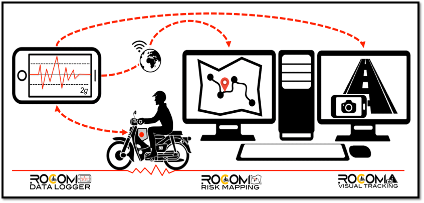

|  |
|
ROCOM is a system of software applications that analyses motorcycle motion and mapped out risky road sections.
The system consists of three major components, i.e. 1. ROCOM Data Logger app, which utilizes a smart phone to collect acceleration data, geolocation, date and time. 2. ROCOM Risk Mapping app, which is a web-based application. 3. ROCOM Visual Tracking, which is a stand alone software to review the footage of location that has adverse acceleration value. ROCOM development team: Ir. Dr. Muhammad Marizwan Abdul Manan [marizwan@miros.gov.my] Muhammad Ruhaizat Abd Ghani [muhammadruhaizat@miros.gov.my] Siti Nurhidayah Musa [sitinurhidayah@miros.gov.my] |